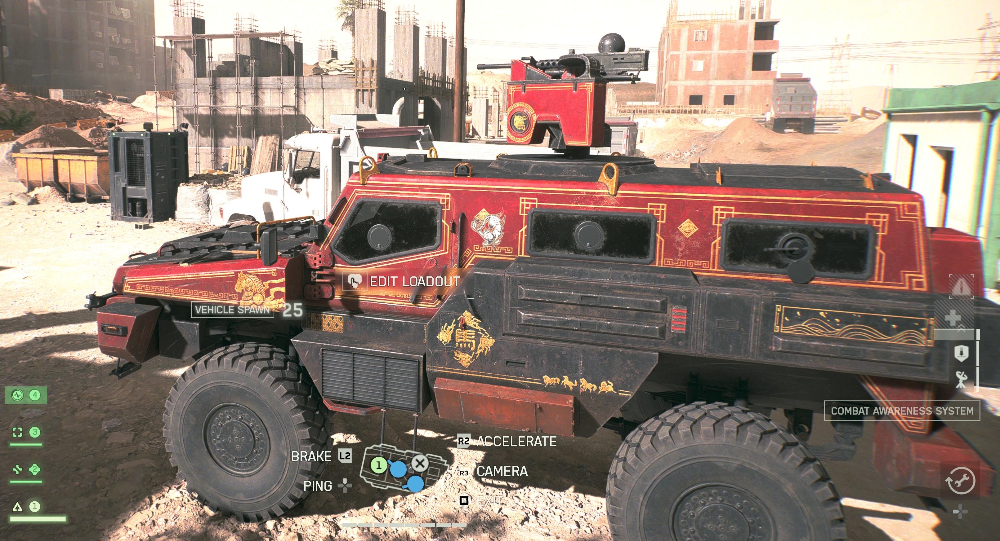

Sustained excellence in long-range strategic positioning.
Independent operator specializing in elevated reconnaissance, observational deployment, and the strategic deferral of objective contact. Serving the battlefield since approximately whenever I bought the game.
Operator
Colonel III

Recorded transmissions
We don't chase the objective. We contemplate the objective from a defensible elevation, at considerable range, while El Caballo waits patiently below. The flag will still be there in fifteen minutes. The associates, to their credit, occasionally go and get it anyway.
— Xpected2, Founder & Managing Partner
Core areas of collective practice.
Gauntlet
Operations
Every class is available everywhere. Results are not. The practice fields a 1.64 K/D specialist, a founder with 149 hours of tenure, and sustained departmental coverage across all objectives it agrees to notice.
Last-Team-Standing
Advisory
Two hundred and fifteen combined top-three placements. The firm does not always win; the firm is reliably present at the closing. Al-V_ maintains a standing reservation in this theater.
Long-Range
Delivery
Correspondence conducted at distances the recipient considers unreasonable. Three practitioners with confirmed deliveries past 300 meters; one past 800. Signatures not required.
Little Bird
Hospitality
The CDLsavage department of aerial affairs. Scout helicopter operations, passenger logistics, and nineteen aircraft removed from opposing inventories — several from inside another aircraft.
Mounted
Operations
The founder's subspecialty and the firm's most recognizable asset. Direct vehicular contact, administered at speed, astride a philosophy. See § 02, Exhibit A, and the opposing team's postmatch remarks.
Posthumous
Reinstatement
A full-service resurrection desk, staffed continuously. Over two thousand three hundred colleagues returned to active duty across the practice, several against their stated preference.
El Caballo.
"There comes a moment in every engagement when one must dismount the analytical and ride the analog. The Traverser Mark 2 is not a vehicle. It is a philosophy."
— Internal Practice Documentation

el-caballo.jpg to your site
folder
What colleagues, opponents, and the occasional spectator have said.
The jeep came out of nowhere.
He's always sniping from somewhere. We've never found him.
His heart is in Marathon.
Not mission focused.
Intangibles. He brings intangibles.
Confirmed road kills. Four hundred and seventy-nine combatants, removed from the playing field via direct vehicular contact.
— A subspecialty within the practice · El Caballo applications particularly notable —
— Jun 2026 filing: 221 · ▲ +258 since the last audit —
A select arsenal, refined over 443 hours.
L110
Elite practitioner status achieved while missing roughly 83 of every 100 shots fired. A testament to the power of volume.
M2010 ESR
Two consecutive sniper rifles. Pattern recognized. Branding consultant on retainer.
SOR-556 MK2
For when the situation calls for something more demonstrative than a 200m sniper engagement.
Sanctioned loadouts, by department.


Territories, theaters, and personal real estate.
The principal office. The corner suite. All major business is conducted here. Mail forwarded to this location.
Formerly a perfectly balanced relationship. The equilibrium has slipped three losses out of true. Repairs ongoing.
36 hours invested. Returns mixed. Emotional attachment forming regardless.
Statistically uncommitted. Refuses to develop a strong opinion either way.
Avoided for personal reasons. We do not speak of Saints Quarter. The practice has effectively withdrawn from this market.
10+ hours of consistent disappointment. Engagement under formal review.
Specialty service offerings.
On the "Not Mission Focused" allegations.
It has come to the attention of the practice that certain teammates, in moments of postmatch reflection, have characterized the operator's contributions as "not mission focused" and, more recently, "intangibles."
The practice wishes to respectfully — and with the appropriate corporate restraint — submit the following evidentiary record for the file:
The practitioner has spent fifty-five hours standing on objectives. That is more than two consecutive days of doing nothing but the mission. The mission has, in fact, been focused upon extensively. The mission and the practitioner are on intimate terms.
We invite the dissenting parties to revisit their performance reviews with the benefit of these clarifying figures. The intangibles, it turns out, were tangibles.
— Issued by The Practice, in formal response · Filed Q3 2026